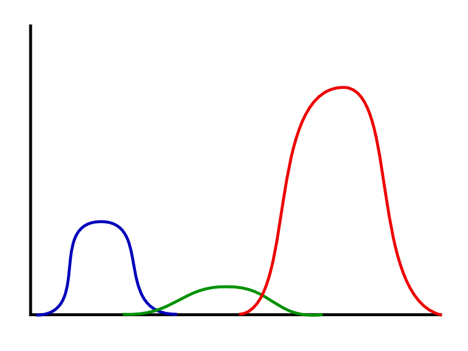
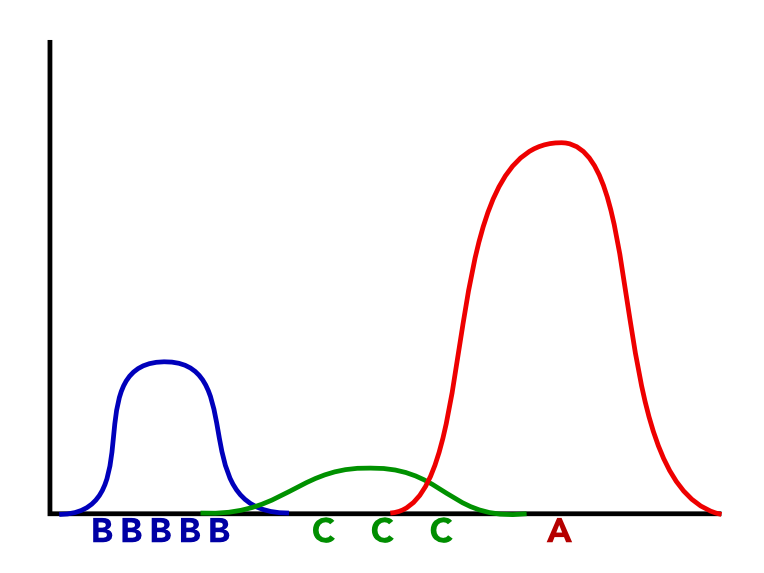
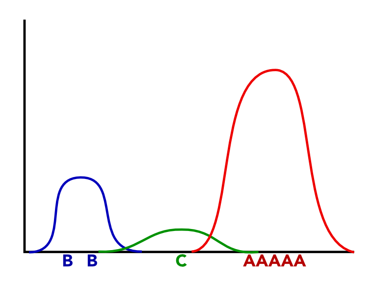

name: inverse layout: true class: left, top, inverse --- # Advanced Clustering --- ## Review + Clustering groups points by using similarity + Build up, or break down groups + Each point belongs to 1 cluster ??? ## Types + Agglomerative, Divisive + Assign each point to 1 centroid (k-means) + or group clusters together, starting with every point as a cluster (hierarchical) --- ## Topics? "This place is great. I've been here for meetings, to get work done, to hang out with friends, and on dates, and it's fit the bill every time. In the summer, there's a wonderful patio, and in the winter it's cozy and warm. All the food I've had is delicious -- especially the salad dressing!" ??? ## Model by topic + ambiance + romantic + good for work + food quality + *Many* + So how do we model? --- ## Fuzzy Clusters + Membership is a degree in [0-1] + ```1 = sum(membership(v,c) for c in clusters)``` + Every point belongs to at least 1 cluster ??? ## Restrictions + Every point still must be in a cluster + Think of the degree as a probability + Probabilities must add up to 100% (1) --- ## Generative Model ??? ## Questions + What is a "generative model"? --- ## Generative Model + "Real" model that produced original data points ??? ## Questions + What is data mining trying to discover? What is machine learning hoping to reproduce? --- ## Generative Model + "Real" model that produced original data points + Our mission is to reproduce the original model ??? ## Questions + Why have different classifiers? Decision tree, Naive Bayes, etc? --- ## Generative Model + "Real" model that produced original data points + Our mission is to reproduce the original model + Thus we have different techniques that can model different behavior --- ## Homework: 1-D Clustering ??? ## Questions + Draw number line --- ## Homework: 1-D Clustering + Imagine plotting the points on the number line ??? ## Questions + Where did these numbers come from? We wanted two clusters. --- ## Homework: 1-D Clustering + Imagine plotting the points on the number line + Points were generated with a process: + Two Gaussian arrays, concatenated ??? ## Questions + What parameters were used in the code to generate this specific set of N numbers? --- ## Parameters + Median + Standard Deviation + How many points to generate from each <img src="img/gaussian-simple.png" width=90% /> ??? ## Translation + Two distributions (median, stddev) + Picked one or the other with a certain probability + Then generated a number from it + In reality, just generated 10 from A, 10 from B, but you can imagine that being 50% and 50% --- ## Generative Model .white-background[  ] ??? ## 3 Clusters + We have all three parameters: + median + stddev + probability of choosing distribution (height) --- ## Best Fit? .left-column[ .white-background[  ] ] .right-column[ .white-background[  ] ] ??? ## Choose + These letters are points on our number line + Which is more likely to be generated by our real model? + But we don't know the generative model, so how do we discover it? --- ## Revisit k-means ??? ## Questions + What are the steps of k-means? --- ## Revisit k-means + Each object assigned to closest cluster --- ## Revisit k-means + Each object assigned to closest cluster + Reset center of the cluster to average --- ## Revisit k-means + Each object assigned to closest cluster + Reset center of the cluster to average + Repeat until steady --- ## Expectation-Maximization + Expectation + Given current state, create a solution that fits our expectations + Maximization + Adjust the state to maximize the likelihood of the solution being true + Terminate + When adjustments do not change ??? ## k-means translation + Our expectation in k-means is that points belong to the cluster closest to them + Our state or parameters for our model are the locations of the centers of those clusters + The maximization step therefore moves the centers to maximize the likelihood of their being the true center --- ## Revisit k-means + Each object assigned to closest cluster + Reset center of the cluster to average + Repeat until steady --- ## Fuzzy Clustering + ~~Each object assigned to closest cluster~~ + Each object assigned *probability* of cluster + ~~Reset center of the cluster to average~~ + Reset center of the cluster to *weighted* average + Repeat until steady ??? ## Change + Only difference here is that we're calculating the probability of a point belonging to a cluster + What should we base that probability off of? distance + If point A has a high probability of belonging to cluster C, what can you say about A and C? Close --- ## Distance ```dist(o,C) / sum(dist(o,c) for c in clusters))``` ??? ## Similarity + Our old friend distance --- ## Distance² .tight-code[ ```dist(o,C)**2 / sum(dist(o,c)**2 for c in clusters))``` ] + Squared distance to primary cluster, divided by squared distance to all clusters ??? ## Similarity + Our old friend distance + And squared, to make sure we stay positive --- ## Reset Center ```sum(weight[c][p]**2 * p for p in points)``` + Squared weight for this point in this cluster, multiplied by point coordinates ??? ## Weighting by distance + Distance of point affects how much a cluster center is pulled toward it --- ## Stability + When our centroids stabilize, we can estimate the parameters of our distributions + Or use probabilities of points directly ??? ## Uses + Sometimes you may not need original parameters --- # *Break*